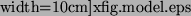

Usually, the theoretical interpretation of AFM images is based on simple models in which the force imposed on the tip originates from the macroscopic long-range Van-der-Waals interaction and a microscopic interaction described using pair potentials between atoms simulating the tip apex and atoms of the sample. In this model only the direct electrostatic interaction between atoms of the tip apex and the sample is accounted for. However, the theoretical model used here takes account of the polarization of the conducting electrodes (i.e. of the tip and the substrate) by the charged atoms of the sample. This is important for any tip-surface (or just surface) setup containing conducting materials e.g. interaction of a conducting tip with an insulating surface or studying the properties of an insulating thin film on top of a metal substrate.
The potential on conducting electrodes is maintained by external sources (i.e. by the ``battery''). From the point of view of classical electrostatics the polarization of the conductors by external charges is caused by the additional potential on the conductors due to the charges. This extra potential is compensated by a charge flow from one electrode to another to keep the potential on the conductors fixed. This work is done by the battery. As a result, there will be some distribution of the net charge on the surfaces of conductors induced by the point charges situated in the free space between them. The net charge on each conducting electrode would interact with the total charge on other conductors and with the point charges. Hereafter this interaction is called the image interaction. A detailed discussion of the derivation and application of the image interaction to AFM systems can be found in refs. [1] and [2].
|
 |
The program itself is designed to calculate the interactions in systems similar to that shown in fig. 1, with an atomistic nano-tip embedded in a conducting macroscopic sphere interacting with an atomistic cluster on top of a metal substrate. This represents a very common experimental setup in modern AFM experiments using conducting tips to image thin insulating films on top of metal substrates. However, the code is very flexible in the types of setup it can study. The properties of insulating tips can be easily investigated by removing the conducting sphere from the system, and in fact the properties of thin films alone can be studied by removing the tip completely from the system. Some example input files at the end of this manual show the variety of different setups that can be studied.